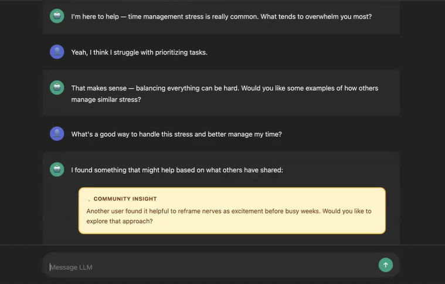
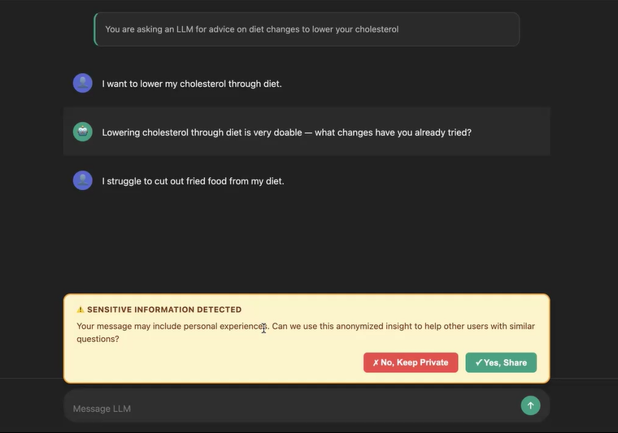

My Research
My research focuses on Human-Computer Interaction, particularly examining how we can design AI systems to
support people's well-being and work.
Context Sharing in Large Language Models
(UCLA HCI Research)
I am currently collaborating with UCLA's HCI Research
group on a study examining user perceptions of context
sharing in large language model systems. Context sharing is the idea of pooling together user histories with an
LLM. This research investigates how we can balance collective intelligence and collaboration while maintaining
personal autonomy and privacy, especially as we move into an increasingly distributed world.
Using Wizard-of-Oz methodology, I conduct user studies across multiple domains including resume assistance,
mental health support, and diet advice to understand when context sharing feels helpful versus invasive to
users. My research examines how different framings of data sharing, levels of transparency, and domain-specific
sensitivities shape user comfort and trust in AI systems. I am analyzing qualitative data from participant
interviews to identify design principles for context-aware AI that balances personalization benefits with
privacy concerns.
This work is being prepared for submission to CHI 2026 LBW.


Adolescent Online Safety Research (STIR
Lab)

At the Socio-Technical Interaction Research Lab under Dr.
Pamela Wisniewski, I researched examining the usability and effectiveness of safety interventions for minors on
social media platforms.
Online safety is a critical issue given teens' vulnerability to cyberbullying, privacy breaches, and exposure to
inappropriate content on social media. To improve digital safety, our project evaluated safety interventions
such as warning popups and content moderation features through a Wizard-of-Oz study using a simulated social
media platform. As a research assistant, I recruited teen participants,
facilitated sessions, and collected qualitative data on their decision-making processes. I helped identify three
effective nudge strategies in our results: (1) offering multiple safety options (flag, block, report), (2)
implementing sensitivity filters for offensive content, and (3) providing public visibility cues that make risky
behaviors apparent to others. These findings demonstrated how interface design can empower teens to make
informed safety decisions without restricting their autonomy. View my research poster here.
AI Coaching Systems Research (RASL Lab)

At the Robotics and Autonomous Systems
Laboratory
under Dr. Nilanjan Sarkar, I explored how large language models can provide personalized athletic coaching
feedback.
My first-author paper, "Enhancing Athletic Performance through AI: An Iterative Prompt Engineering Approach for
LLM-Based Coaching Feedback," presented at HCI International 2025, introduces a systematic methodology for
engineering effective prompts that generate contextually appropriate, actionable coaching guidance. View my research poster here.
This work combines technical system development with interpretive analysis of how users perceive and respond to
AI-generated feedback. I developed evaluation frameworks to assess feedback quality across dimensions of
specificity, actionability, and motivational tone. Through comparative user studies, I analyzed how
LLM-generated coaching compares to human expert feedback and identified key factors that influence user trust
and adherence.
Additionally, I investigated Siamese neural networks for detecting subtle differences in athletic movement
patterns, enabling more precise, data-driven coaching interventions.
Publications & Writing Samples
Enhancing Athletic Performance through AI: An Iterative Prompt Engineering Approach for LLM-Based
Coaching
Feedback
Published in HCI International 2025 Proceedings. This first-author paper presents a systematic approach
to designing LLM-based coaching systems and evaluates their effectiveness through user studies.
My research interests span Human-Computer Interaction, Artificial Intelligence, Machine Learning, Natural
Language Processing, Deep Learning, Neural Networks, Computer Vision, and Time Series Analysis.